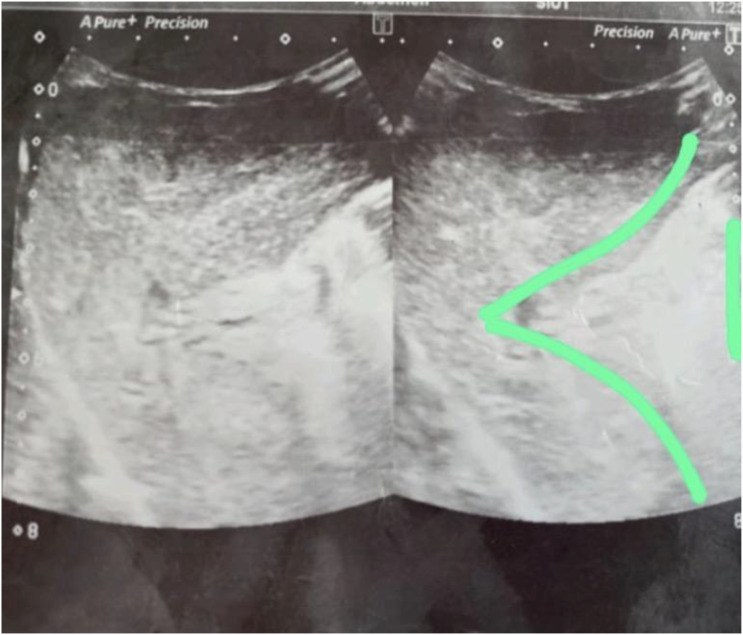
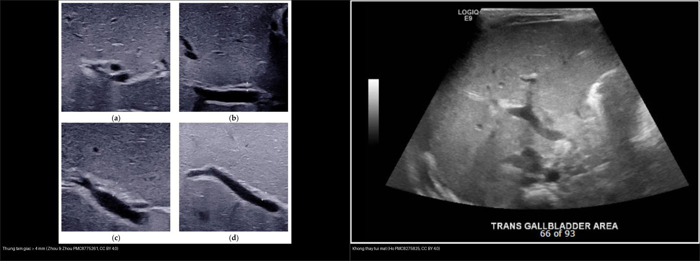
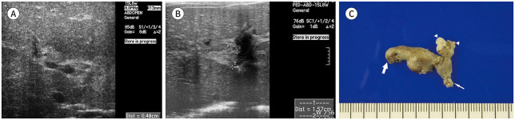
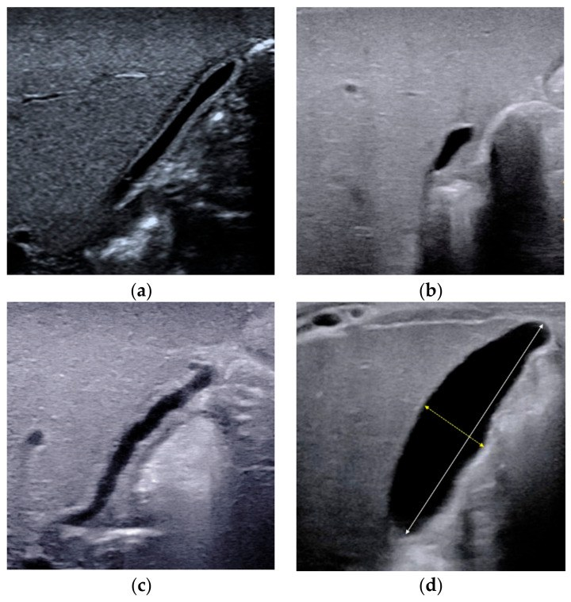
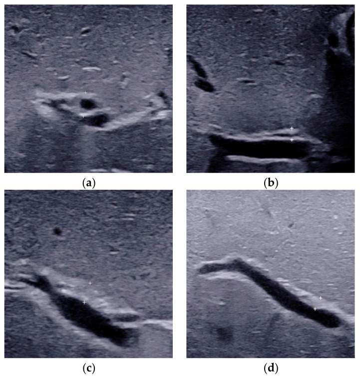
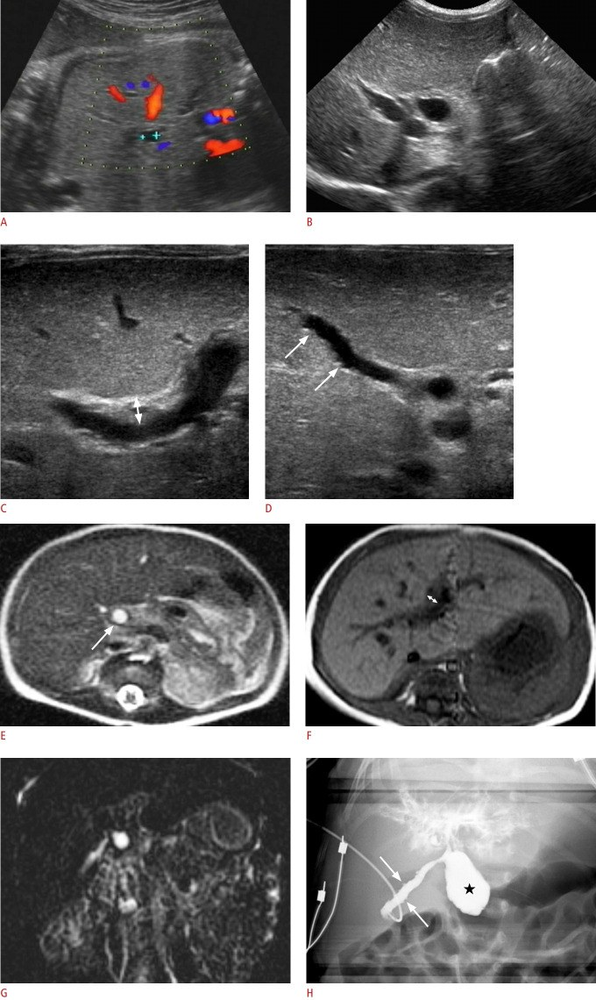
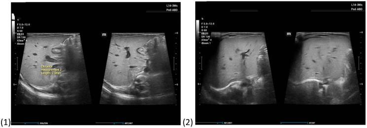
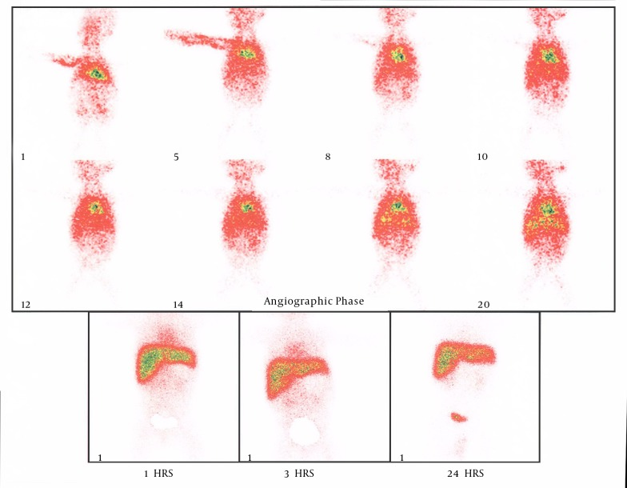

625 — Vàng da tắc mật: teo đường mật vs viêm gan / Biliary atresia
Tags: pattern:vang-da-so-sinh vung:gan-mat-nhi protocol:sieu-am-gan-mat-nhi
Mức chắc chắn (certainty): tổng hợp y văn (literature synthesis) — nhóm tự biên từ y văn mở (J Korean Soc Radiol 2022; Diagnostics 2021; Front Pediatr 2021; Ultrasonography 2021; Int J Surg Case Rep 2024) + các ca trong quiz là ca nguyên văn (verbatim case) chép đúng tuổi – chú thích gốc.
1. Tổng quan — xơ hóa đường mật ngoài gan + Kasai càng sớm càng cứu gan
Vàng da ứ mật (cholestasis) ở nhũ nhi là vàng da liên hợp (conjugated) — định lượng: bilirubin toàn phần > 20 µmol/L với > 20% là liên hợp. Kéo dài > 2 tuần là bất thường và phải tìm nguyên nhân (teo đường mật, viêm gan sơ sinh, nang ống mật chủ...).
- Teo đường mật (biliary atresia, BA): viêm–xơ tắc đường mật ngoài gan tiến triển, để lại "thừng" xơ (fibrous ductal remnant) ở rốn gan. TẠI SAO thừng tam giác (triangular cord, TC) ≥ 4 mm đặc hiệu: đây là di tích ống mật xơ hóa trước chạc ba tĩnh mạch cửa — tổ chức xơ phản âm dày lên tạo dải tăng âm hình tam giác giữa hai nhánh tĩnh mạch cửa phải. Ngưỡng ≥ 4 mm: Se 100% / Sp 90,9%, AUC 0,964 (Ultrasonography 2021); ≤ 4 mm loại trừ BA tốt nhất.
- TẠI SAO túi mật teo/không co bóp: không có mật xuống túi mật → túi nhỏ (thường < 15–19 mm), thành không đều và không co sau bú. Không thấy túi mật trên siêu âm: Se 92%, Sp 73%, PPV 43%, NPV 97% (Front Pediatr 2021) — độ đặc hiệu thấp, chỉ có giá trị khi dương tính kèm dấu hiệu khác, không loại trừ BA khi âm tính.
- TẠI SAO HIDA: ở BA, gan hấp thu nhưng không thấy chất đánh dấu trong ruột non sau 24 giờ (tắc hoàn toàn) — Se ~97–100% để loại trừ BA khi thấy tracer xuống ruột (Diagnostics 2016); ngược lại, không thấy ruột 24h không đặc hiệu vì viêm gan nặng/ứ mật kéo dài cũng ứ (cạm bẫy).
- Thời điểm sống còn: Kasai (nối rốn gan–hỗng tràng) trước 60 ngày tuổi, tốt nhất 30–45 ngày (JPGN Rep 2026) — TẠI SAO phải sớm: sau 90–120 ngày xơ gan F4 không hồi phục; cửa sổ vàng rất hẹp.
- Dịch tễ: BA gặp ~1/10.000–1/14.000 trẻ sinh; teo đường mật dạng nang (cystic BA) chiếm ~5,5% ca BA và dễ nhầm với nang ống mật chủ (choledochal cyst).
2. Gamut vàng da ứ mật > 2 tuần (Gamut)
- Thừng ≥ 4 mm + túi mật teo/không thấy + HIDA không thải 24 giờ: teo đường mật → Kasai < 60 ngày + sinh thiết gan xác nhận.
- Túi mật thường + co bóp + thải HIDA (muộn nhưng có): viêm gan sơ sinh (do CMV, TORCH, chuyển hóa) → điều trị nội khoa + theo dõi.
- Nang + vàng da + viêm tụy: nang ống mật chủ (Todani I–V) → cắt nang + nối mật–ruột (nguy cơ ung thư đường mật).
- Nang nhỏ (< 1 cm trước sinh) → không to lên sau sinh + thừng ≥ 4 mm + niêm mạc túi mật không đều:** **teo đường mật dạng nang** — khác nang ống mật chủ (nang trước sinh **> 1 cm và to lên sau sinh).
- Hạch rốn gan chèn ép ống mật chủ: nguyên nhân giả teo đường mật rất hiếm nhưng có — hình ảnh hạch rốn gan + mô bệnh học là chốt (Int J Surg Case Rep 2024).
- Thiểu sản đường mật trong gan (Alagille): vàng da ứ mật + hẹp động mạch phổi + đốt sống hình bướm — không phải BA (thăm dò di truyền JAG1/NOTCH2).
3. Bảng so sánh phân biệt (ma trận đối chiếu)
| Thực thể (entity) | Hình ảnh điển hình | Chốt vào (rule-in) | Chốt loại (rule-out) | Gợi ý xác nhận |
|---|---|---|---|---|
| Teo đường mật (BA) | Thừng tam giác ≥ 4 mm trước chạc ba TM cửa + túi mật < 15–19 mm/không thấy, không co bóp + HIDA không thải 24h | Thừng ≥ 4 mm (Se 100%/Sp 90,9%; AUC 0,964) + ghost triad | Túi mật co bóp được + HIDA có ruột → viêm gan | Kasai < 60 ngày (lý tưởng 30–45) + sinh thiết gan |
| Viêm gan sơ sinh | Túi mật thường, co bóp sau bú, HIDA thải chậm nhưng có | Túi co bóp + HIDA có ruột + CMV/TORCH | Thừng ≥ 4 mm + túi teo → BA | Nội khoa + GGT + TORCH/CMV PCR |
| Nang ống mật chủ | Nang đường mật to lên sau sinh, giãn đường mật trong–ngoài gan, MRCP thấy nang | Nang > 1 cm trước sinh + to lên + hợp lưu tụy-mật bất thường | Nang nhỏ < 1 cm không to + thừng ≥ 4 mm → teo dạng nang | Cắt nang + nối mật–ruột Roux-en-Y |
| Teo dạng nang (cystic BA) | Nang nhỏ < 1 cm trước sinh, không to, niêm mạc túi mật không đều, không thấy OMC xa trên MRI | Nang MRI ≤ 2,2 cm (Se 70%/Sp 100%) + niêm mạc không đều + không thấy OMC xa | Nang to lên + không thừng → nang OMC | Kasai sớm; theo dõi xơ gan |
| Hạch rốn gan giả BA | Hạch rốn gan chèn ép OMC, hình ảnh giống tắc đường mật | Hạch rốn gan + mô bệnh hạch lành | Thừng ≥ 4 mm + HIDA không thải → BA thật | Sinh thiết/mổ thăm dò xác định |
| Đến muộn F4 | Xơ gan, lách to, cổ trướng, thừng dày | F4 + > 90 ngày (cửa sổ Kasai đã qua) | Sớm + đồng ý mổ → Kasai | Ghép gan |

Dày xơ trước cửa + gan to giữa + túi nhỏ, HIDA không thải 24h. Nguồn: Khan M et al., Clin Med Insights Case Rep 2026 (PMC13241611), Fig. 1, CC BY-NC 4.0.
Trái: đo thừng tam giác trên nhánh trước TM cửa (dấu +). Phải: không thấy túi mật ở trẻ teo đường mật. Nguồn: Zhou W & Zhou L, Diagnostics 2021 (PMC8775261), CC BY 4.0 + Ho A et al., Front Pediatr 2021 (PMC8275825), CC BY 4.0. Ảnh ghép letterbox, giữ tỉ lệ.Đọc thừng tam giác cho chuẩn (định lượng)
- Đo trên lát dọc, ngay trước nhánh trước tĩnh mạch cửa phải, trừ đi thành trước động mạch gan phải nếu nằm trong dải tăng âm; ngưỡng ≥ 4 mm (có nghiên cứu đề xuất đo bề dày thành trước động mạch gan phải, cut-off 2 mm, cho độ nhạy cao với thay đổi xơ nhẹ).

Bé gái 53 ngày teo đường mật — siêu âm dọc thấy thừng tam giác (dải tăng âm dày, hình ống) ở rốn gan. Nguồn: Lee HJ et al., J Korean Soc Radiol 2022 (PMC9574273), Fig. 2, CC BY-NC 4.0 (giữ nguyên bản).- Dùng đầu dò tần số cao (trẻ nhỏ) mới thấy rõ; đầu dò thấp có thể bỏ sót (J Korean Soc Radiol 2022) — ca không thấy thừng không loại trừ BA.
4. Protocol chụp + hệ phân độ/điểm chuẩn hóa
- Siêu âm gan-mật đầu tay (nhịn bú ≥ 4 giờ): đo bề dày thừng (mm), kích thước + co bóp túi mật sau bú, tìm nang rốn gan, hạch rốn gan, giãn đường mật trong gan, dấu hiệu tăng áp cửa (lách to, cổ trướng).
- HIDA (99mTc-mebrofenin): thấy tracer xuống ruột = loại trừ BA (Se ~97–100%); không thấy ruột 24h chỉ gợi ý (không đặc hiệu) — đọc kèm lâm sàng và hình ảnh khác.
- MRI/MRCP: khi nghi nang ống mật chủ hoặc teo dạng nang; giúp phân biệt nang nhỏ (teo dạng nang) vs nang ống mật chủ (nang ≤ 2,2 cm + không thấy OMC xa → teo dạng nang).
- Sinh thiết gan / mổ thăm dò + cholangiography: tiêu chuẩn vàng khi hình ảnh không kết luận — thấy di tích đường mật xơ hoặc hạch chèn ép sẽ chốt.
- Điểm chuẩn hóa — bộ dấu hiệu siêu âm (Zhou 2021): ① phân loại túi mật; ② thừng ≥ 4 mm; ③ nang rốn gan; ④ hạch rốn gan to; ⑤ động mạch gan phải giãn (≥ 1,5 mm); ⑥ tăng tưới máu dưới bao gan; ⑦ độ cứng gan (elastography); ⑧ bơm cản quang qua túi mật (cholecystocholangiography) — tổ hợp nhiều dấu cho độ chính xác cao hơn một dấu.
flowchart TD
A["Vang da > 2 tuan + phan bac mau (bilirubin lien hop > 20 umol/L, > 20% lien hop)"] --> B["Sieu am gan-mat (nhin bu >= 4 gio): thung? tui mat? HIDA"]
B --> C{"Thung tam giac >= 4 mm VA tui mat < 15-19 mm/khong thay, khong co bop?"}
C -->|Co| D["Teo duong mat -> KASAI < 60 ngay (ly tuong 30-45) + sinh thiet"]
C -->|Khong| E{"Tui mat thuong, co bop + HIDA co ruot?"}
E -->|Co| F["Viem gan so sinh -> noi khoa, TORCH/CMV"]
E -->|Khong -> co nang| G{"Nang duong mat: kich thuoc truoc sinh va tien trien?"}
G -->|"Nang to len, > 1 cm truoc sinh"| H["Nang ong mat chu -> cat nang + Roux-en-Y"]
G -->|"Nang nho, khong to, niem mac tui mat khong deu"| I["Teo dang nang -> KASAI som"]
B --> J{"Hinh anh khong ket luan?"}
J -->|Co| K["MRI/MRCP + sinh thiet/mo tham do cholangiography (tieu chuan vang)"]
5. Biến thể bình thường và cạm bẫy
- Không thấy túi mật KHÔNG đồng nghĩa BA — độ đặc hiệu 73% (PPV chỉ 43%); phải kết hợp thừng + HIDA + lâm sàng.
- HIDA không thấy ruột 24 giờ cũng gặp trong viêm gan nặng/ứ mật nặng → không một mình chốt BA (cạm bẫy hay gặp).
- Hạch rốn gan có thể chèn ép OMC giả teo đường mật — nếu không có thừng điển hình, sinh thiết/mổ để xác định.
- CMV (+) không loại trừ BA: trẻ vừa viêm gan CMV vừa teo đường mật vẫn cần Kasai dựa trên thừng + túi teo.
- Teo dạng nang bị nhầm nang ống mật chủ: điểm khác là kích thước nang không to lên + niêm mạc túi mật không đều + không thấy OMC xa; nhầm hướng xử trí (Kasai thay vì cắt nang).
- Quang trị liệu/chờ tự hết quá 60 ngày làm mất cửa sổ Kasai — theo dõi sát và chuyển sớm khi vàng da liên hợp kéo dài.
- Phân bạc màu bố mẹ không nhận ra — thẻ màu phân là công cụ tầm soát rẻ tiền quan trọng.
6. Tự lượng giá — Blind Quiz (ảnh trơn ngoài, đáp án ẩn trong khối chi tiết)
Ca 1 — Trẻ 3 tháng vàng da từ sinh + situs inversus + VSD. Đọc siêu âm.
- Gợi ý lâm sàng: vàng da ứ mật từ sinh, hội chứng kèm (situs inversus, VSD).
- Câu hỏi: Thừng dày bao nhiêu mm? Ngưỡng là bao nhiêu? Còn Kasai được không?
Bấm để hiện đáp án (findings + chẩn đoán)
- Dấu hiệu: thừng tam giác 4,5 mm (≥ 4) trước chạc cửa + túi mật nhỏ + HIDA không thải 24h + F4 (xơ gan).
- Chẩn đoán: teo đường mật hội chứng (situs inversus + VSD) — đã 90 ngày + F4 + từ chối mổ → tử vong. Bài học: Kasai < 60 ngày (lý tưởng 30–45) mới cứu được gan.
- Nguồn ảnh: Khan M et al., Clin Med Insights Case Rep 2026 (PMC13241611), Fig. 1, CC BY-NC 4.0.
Ca 2 — Trẻ vàng da ứ mật. Siêu âm: đo thừng và tìm túi mật. Hai dấu hiệu nói gì?
- Câu hỏi: Dấu hiệu bên trái (dấu +) là gì, ngưỡng bao nhiêu? Bên phải vì sao gợi ý teo đường mật? Còn cần gì để chốt?
Bấm để hiện đáp án (findings + chẩn đoán)
- Trái: đo thừng tam giác ≥ 4 mm trước nhánh trước TM cửa (Se 100%/Sp 90,9%, AUC 0,964).
- Phải: không thấy túi mật — Se 92% nhưng Sp 73%, PPV 43%, NPV 97% → chỉ có giá trị dương tính, không loại trừ BA.
- Chốt: kết hợp thừng + túi mật + HIDA 24h + sinh thiết, không dựa một dấu hiệu.
- Nguồn ảnh: Zhou W & Zhou L, Diagnostics 2021 (PMC8775261), CC BY 4.0 + Ho A et al., Front Pediatr 2021 (PMC8275825), CC BY 4.0 (ảnh ghép letterbox).
Ca 3 — Siêu âm túi mật ở 4 trẻ vàng da. Phân loại túi mật (a–d) và nêu loại gợi ý teo đường mật.

- Câu hỏi: (a)–(d) khác nhau thế nào? Loại nào gợi ý BA? Vì sao đánh giá co bóp sau bú?
Bấm để hiện đáp án (findings + chẩn đoán)
- Dấu hiệu: (a) túi mật bình thường; (b) túi teo nhỏ/co; (c) túi hình dạng bất thường/không đều; (d) túi nhỏ có đo kích thước — teo đường mật điển hình là túi mật nhỏ/không đều/không thấy.
- Đánh giá co bóp: so sánh trước và sau bú — BA không co bóp vì không có mật xuống; viêm gan thường co bóp được (dù có thể chậm).
- Nguồn ảnh: Zhou W & Zhou L, Diagnostics 2021 (PMC8775261), Fig. 1, CC BY 4.0.
Ca 4 — Đo thừng tam giác ở 4 trẻ (a–d). Panel nào là teo đường mật?

- Câu hỏi: Đo ở đâu? Ngưỡng bao nhiêu? Vì sao phải dùng đầu dò tần số cao?
Bấm để hiện đáp án (findings + chẩn đoán)
- Dấu hiệu: các panel đo bề dày dải tăng âm trước nhánh trước TM cửa (thước đo/caliper); panel > 4 mm (= 4,4 mm trong minh họa) gợi ý teo đường mật; panel ≤ 4 mm thường là không BA (viêm gan/bình thường).
- Kỹ thuật: đo lát dọc, trừ thành trước động mạch gan phải; dùng đầu dò tần số cao để không bỏ sót dải xơ mỏng.
- Nguồn ảnh: Zhou W & Zhou L, Diagnostics 2021 (PMC8775261), Fig. 2, CC BY 4.0.
Ca 5 — Trẻ vàng da có nang rốn gan nhỏ. Siêu âm trước sinh + sau sinh + MRI: teo dạng nang hay nang ống mật chủ?

- Gợi ý lâm sàng: nang quanh rốn gan phát hiện trước sinh.
- Câu hỏi: Kích thước nang và tiến triển? Dấu hiệu nào phân biệt với nang ống mật chủ?
Bấm để hiện đáp án (findings + chẩn đoán)
- Dấu hiệu: (A) siêu âm thai 35 tuần — nang 0,6 cm quanh rốn gan; sau sinh nang không to lên + niêm mạc túi mật không đều + không thấy OMC xa trên MRI.
- Chẩn đoán: teo đường mật dạng nang (cystic biliary atresia) — khác nang ống mật chủ (nang trước sinh > 1 cm và to lên sau sinh). Ngưỡng MRI: nang ≤ 2,2 cm gợi ý teo dạng nang (Se 70%/Sp 100%); thừng ≥ 4 mm (Se 100%/Sp 90,9%). Xử trí: Kasai sớm, theo dõi xơ gan/ghép.
- Nguồn ảnh: Shin HJ et al., Ultrasonography 2021 (PMC7994739), Fig. 1, CC BY-NC 4.0 (giữ nguyên bản).
Ca 6 — Trẻ 3 tuần vàng da tăng dần, hình ảnh ban đầu giống teo đường mật. Siêu âm rốn gan.

- Gợi ý lâm sàng: vàng da tăng dần, xét nghiệm gợi ý tắc mật; mổ thăm dò sau đó.
- Câu hỏi: Dấu hiệu siêu âm? Chẩn đoán thay thế? Xác nhận bằng gì?
Bấm để hiện đáp án (findings + chẩn đoán)
- Dấu hiệu: siêu âm rốn gan cho hình ảnh khối/hạch vùng rốn gan gợi ý tắc đường mật — giống teo đường mật.
- Chẩn đoán: hạch rốn gan chèn ép ống mật chủ (mô bệnh học hạch lành, đường mật giải phẫu bình thường) — nguyên nhân hiếm giả teo đường mật; mô bệnh/mổ thăm dò là chốt.
- Nguồn ảnh: Ngowi E et al., Int J Surg Case Rep 2024 (PMC11320468), Fig. 1, CC BY 4.0.
Ca 7 — Trẻ vàng da ứ mật, siêu âm không kết luận. HIDA 99mTc-mebrofenin.

- Câu hỏi: Gan có hấp thu không? Có thấy chất đánh dấu trong ruột không? Giá trị và hạn chế của HIDA?
Bấm để hiện đáp án (findings + chẩn đoán)
- Dấu hiệu: gan hấp thu tốt chất phóng xạ nhưng KHÔNG thấy tracer trong ruột non sau 24 giờ = ứ mật hoàn toàn, phù hợp teo đường mật (ở ca gốc).
- Giá trị: thấy ruột → loại trừ BA (Se ~97–100%); không thấy ruột 24h không đặc hiệu (viêm gan nặng cũng ứ) → luôn kết hợp siêu âm (thừng ≥ 4 mm) + sinh thiết.
- Nguồn ảnh: Motamed F et al., Iran J Radiol 2014 (PMC4347753), Fig. 1, CC BY-NC 4.0 (giữ nguyên bản).
Bài liên quan chéo
- 600 – Tổng quan Hệ Nhi khoa
- 620 – Cấp cứu tiêu hóa sơ sinh & nhũ nhi
- 626 – Viêm tụy cấp ở trẻ (Atlanta nhi, nang ống mật chủ, tụy divisum)
- 131 – Tắc mật
- 123 – Nang gan & bệnh gan đa nang (Caroli, von Meyenburg)
Ảnh
- Tên file:
NNN_slug_Modality_SourceID.jpg. Nguồn + giấy phép từng ảnh:images/CREDITS.mdvàsources.md. - Ảnh CC BY 4.0 dùng cho ảnh ghép; ảnh CC BY-NC/CC BY-NC-ND giữ nguyên bản, không crop/ghép.
Không dùng để chẩn đoán độc lập khi chưa có người hướng dẫn.